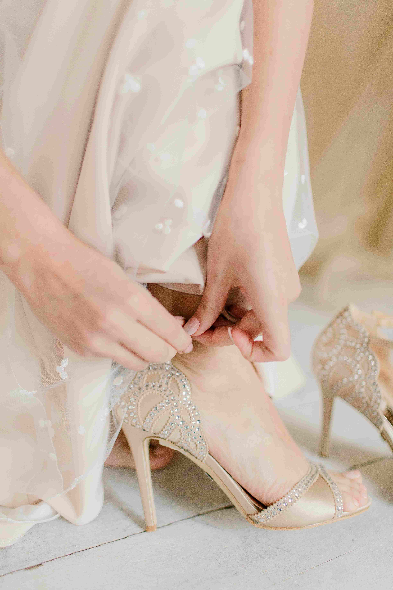
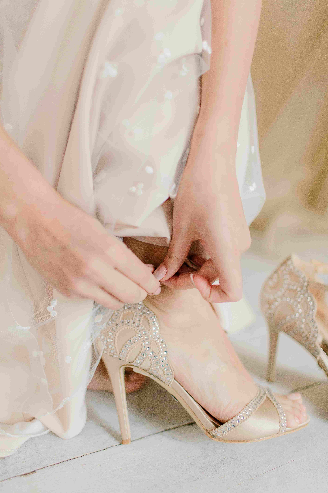

Maysan Boutique será una plataforma de comercio electrónico especializada en calzado de alta calidad para caballeros y damas. El proyecto busca ofrecer una experiencia de compra personalizada con herramientas específicas para la selección de calzado, como guía de tallas, visualización 360° y recomendaciones personalizadas basadas en el estilo del usuario.
 
